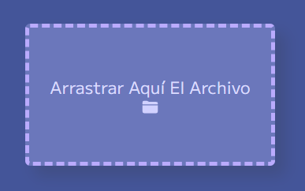
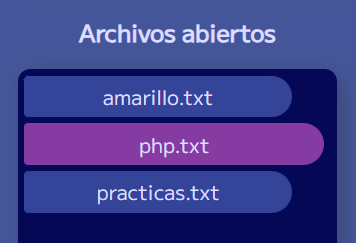
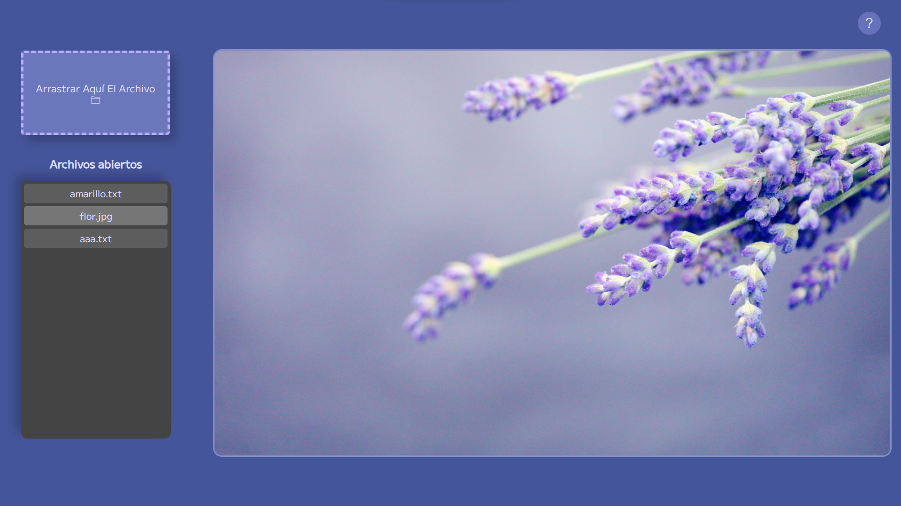
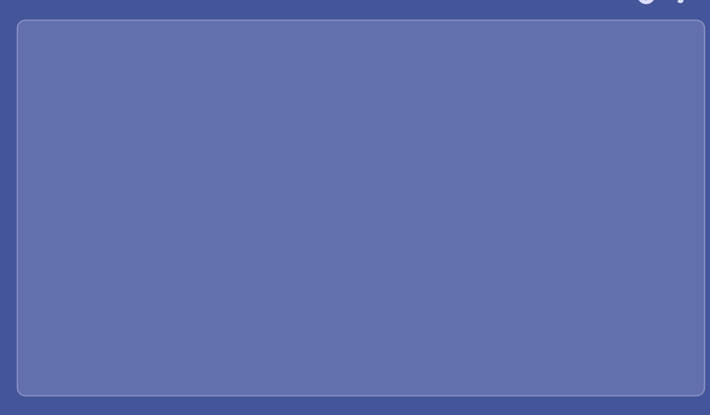
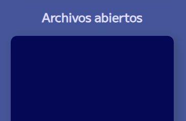
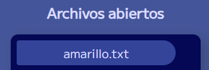
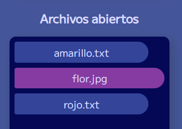

Es una aplicación web en la cual su función principal es leer archivos y mostrarlos en pantalla.
Se leen los siguientes archivos: .txt, .jpg, .png, .mp4
La aplicación funciona al arrastrar archivos directamente desde la carpeta de archivos de tu computadora y soltar dentro de la seccion de "Arrastrar Aquí El Archivo".
Hay un panel que es la seccion de "Archivos abiertos" donde se pueden visualizar los archivos que fueron leídos y al hacer click para mostrarlos nuevamente en la pantalla.
Temas creados:
Predeterminado
Personalizar colores:
Color de Fondo:
Visualizacion del Archivo:
Zona de Arrastre de Archivo:
Columna de Archivos Abiertos:
Archivos abiertos:
Archivo abierto y Mostrandose:
Color de Texto e iconos:
Ponle un Nombre a tu Tema